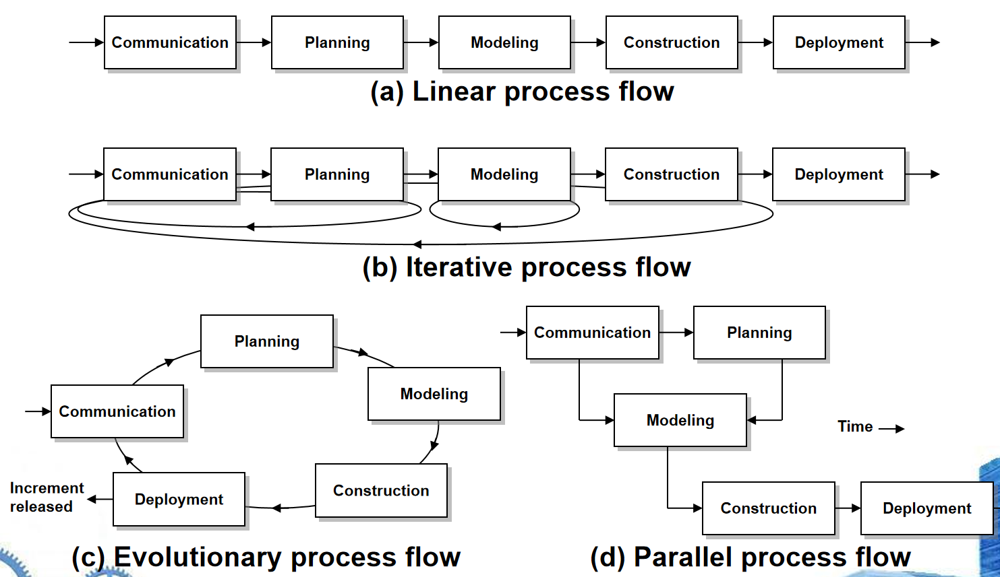

# Ch2 Software Engineering
- Definition: The application of a systematic, disciplined, quantifiable（可量化） approach to the development, operation, and maintenance of software
- 软件工程是一个多层次的技术体系 (a layered technology)
- 从下往上是 a “quality” focus, process model, methods, tools, 反映了构建高质量软件产品的逻辑流程
- 软件过程（The Software Process）中的两个重要概念：通用过程框架（Common Process Framework）和 伞形活动（Umbrella Activities）
- 通用过程框架（Common Process Framework）： 软件开发过程中的一些基本要素
- 工作任务（work tasks）：指在软件开发的不同阶段中需要完成的具体任务。
- 工作产品（work products）：指在执行工作任务过程中产生的各种文档、代码等成果物。
- 里程碑与交付物（milestones & deliverables）：里程碑是项目进展的重要节点，而交付物是在这些节点上需要提交的成果。
- 质量保证检查点（QA checkpoints）：在整个开发过程中设置的检查点，用于评估和确保软件产品的质量。
- 伞形活动（Umbrella Activities）：软件开发过程中需要执行的活动
- 项目管理（Project management）：负责项目的规划、组织、协调和控制，确保项目按计划进行。
- 质量保证（Quality assurance）：通过一系列措施确保软件产品的质量符合预定标准。
- 工作产品生产（Work product production）：涉及创建和维护软件开发过程中产生的各种工作产品。
- 测量（Measurement）：收集和分析数据以评估项目的状态和进度。
- 正式技术评审（Formal technical reviews）：对软件的技术设计和实现进行系统性的审查。
- 配置管理（Configuration management）：管理软件开发过程中各种配置项的变化，确保版本的一致性和可追溯性。
- 重用管理（Reusability management）：促进软件组件和模块的重用，提高开发效率和软件质量。
- 风险管理（Risk management）：识别、评估和应对可能影响项目成功的各种风险。
- 通用过程框架（Common Process Framework）： 软件开发过程中的一些基本要素
- Generic Process Framework 通用的软件开发过程框架
- Communication: 与客户协作并收集需求
- Planning: establishes engineering work plan, describes technical risks, lists resource requirements, work products produced, and defines work schedule
- Modeling: 创建模型以帮助开发者和客户理解需求和设计
- Construction: code & test
- Deployment: 交付软件供客户评估和反馈
- Process Adaptation 过程适配：根据项目的具体需求、限制条件和特点，对软件开发过程进行定制和调整
- overall flow of activities, actions, and tasks and the interdependencies among them
- degree to which actions and tasks are defined within each framework activity
- degree to which work products are identified and required
- manner which quality assurance activities are applied
- manner in which project tracking and control activities are applied
- overall degree of detail and rigor with which the process is described
- degree to which the customer and other stakeholders are involved with the project
- level of autonomy given to the software team
- degree to which team organization and roles are prescribed
- The Essence of Practice
- Understand the problem (communication and analysis).
- Plan a solution (modeling and software design).
- Carry out the plan (code generation).
- Examine the result for accuracy (testing and quality assurance).
- General Principles 通用原则：软件开发过程中应遵循的一些核心指导思想或基本原则
- The reason it all exists — Provide Value to users
- KISS — Keep It Simple, Stupid!
- Maintain the Vision
- What you produce, others will consume
- Be open to the future
- Plan ahead for reuse
- Think!
- Software Development Myths 软件开发管理中常见的误解（Myth）及其背后的现实情况（Reality）
- Management myths
- 标准和流程的有效性依赖于团队的理解和接受程度。
- 软件开发是一个高度协作和复杂的创造性过程，简单地增加人力并不能解决进度问题。
- 外包项目同样需要良好的管理和沟通能力，不能因为外包就忽视了对项目的控制和监督
- Customer myths
- 详细的需求分析和规划
- 充分的沟通与确认
- 合理的进度评估
- Practitioner’s myths
- 错误：一旦我们编写好程序并使其正常运行，我们的工作就完成了
- 过早进入编码阶段可能会导致更多的返工和调整，从而延长项目周期
- Management myths
# Ch3 Software Process Structure
Umbrella Activities 是贯穿整个软件开发过程的活动，Framework Activity 是软件开发的核心阶段，如沟通、计划、建模、构建和部署，每个框架活动下都有具体的 task set，每个 task set 中又包含多个具体的 action
-
Process flow 过程流（对于之前提到的 Generic Process Framework 的五步）
- 线性过程流（Linear process flow）
- 迭代过程流（Iterative process flow）
- 演化过程流（Evolutionary process flow）
- 并行过程流（Parallel process flow）

-
Process Patterns 过程模式
Process patterns define a set of activities, actions, work tasks, work products and/or related behaviors
提供了一种template用于定义模式
Generic software pattern elements: -
pattern name
-
Intent (objective of pattern)
-
Type (Task pattern, Stage pattern, Phase pattern)
-
Initial context
-
Solution
-
Resulting context
-
Related patterns
-
Known uses/examples
-
Process Assessment
几种评估软件过程的方法：
SCAMPI (Standard CMMI Appraisal Method for Process Improvement)
SPICE (ISO/IEC 15504)
CBA IPI (Capability Benchmarking Appraisal using the Integrated Process Improvement method)
ISO 9001:2000 for Software -
The Capability Maturity Model Integration 能力成熟度模型集成（CMMI）
- Level 0: Incomplete
- Level 1: Performed
- Level 2: Managed
- Level 3: Defined
- Level 4: Quantitatively Managed 定量管理
- Level 5: Optimizing